GDB调试原理
前言
这篇文章来聊聊大名鼎鼎的 GDB，它的豪门背景咱就不提了，和它的兄弟 GCC 一样是含着金钥匙出生的，在 GNU 的家族中的地位不可撼动。
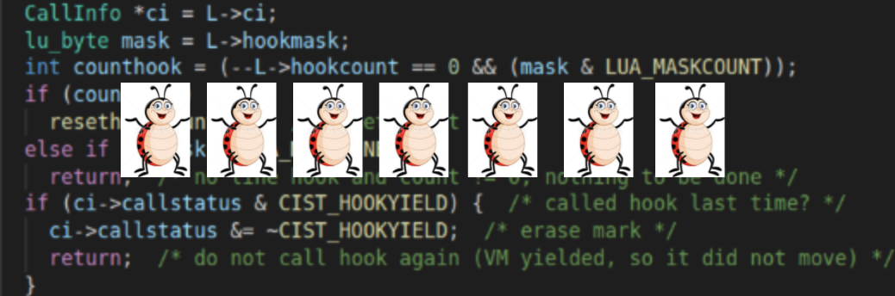
我们都知道，在使用 GCC 编译时，可以使用 -g 选项在可执行文件中嵌入更多的调试信息，那么具体嵌入了哪些调试信息？这些调试信息是如何与二进制的指令之间进行相互交互？在调试的时候，调试信息中是如何获取函数调用栈中的上下文信息？
GDB调试模型
GDB 调试包括 2 个程序：gdb 程序和被调试程序。根据这 2 个程序是否运行在同一台电脑中，可以把 GDB 的调试模型分为 2 种:
- 本地调试
- 远程调试
本地调试：调试程序和被调试程序运行在同一台电脑中。
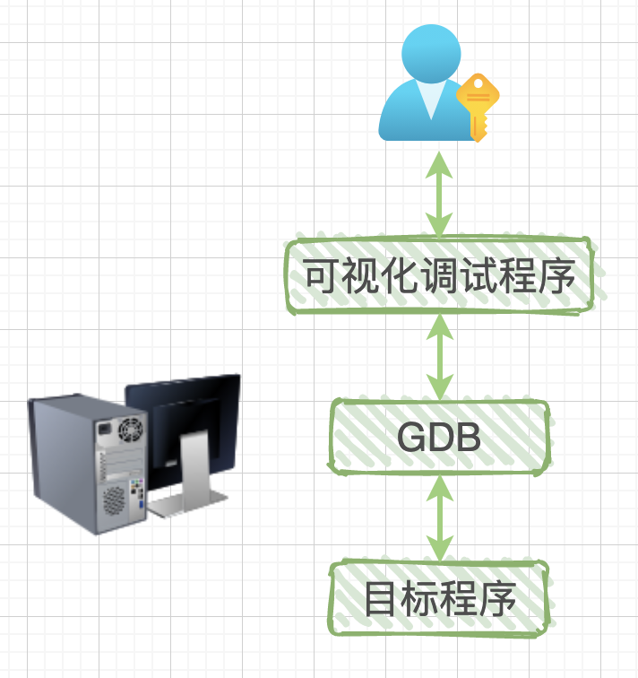
远程调试：调试程序运行在一台电脑中，被调试程序运行在另一台电脑中。
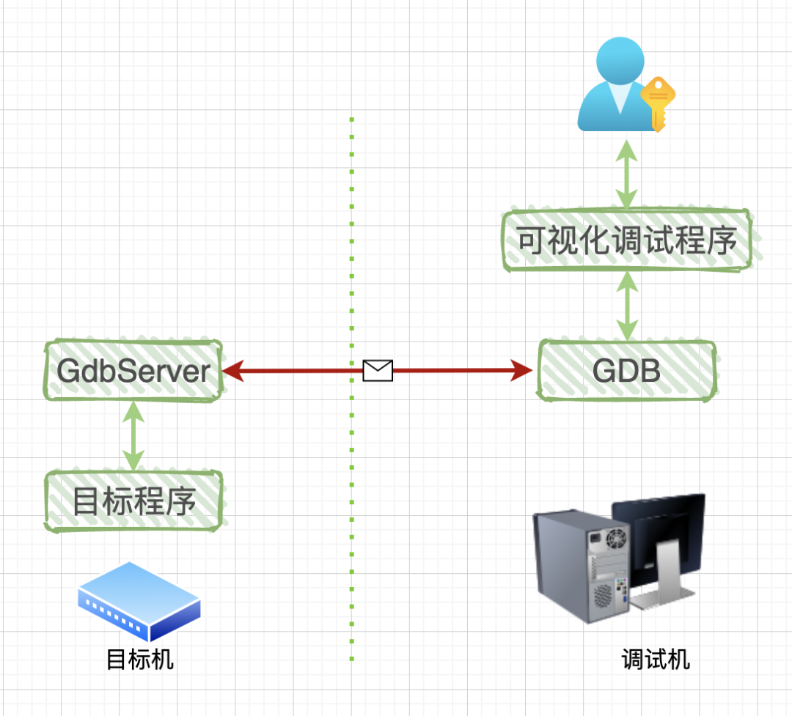
关于可视化调试程序并不是重点，它只是一个用来封装 GDB 的外壳而已。我们既可以用黑乎乎的终端窗口来手动输入调试命令；也可以选择集成开发环境(IDE)，这个 IDE 中已经嵌入了器调试，这样就可以使用各种 button 来代替手动输入调试命令了。
与本地调试相比，远程调试中多了一个 GdbServer 程序，它和目标程序都是运行在目标机中，可能是一台 x86 电脑或者是一个 ARM 板子。图中的红线表示 GDB 与 GdbServer 之间通过网络或者串口进行通讯。既然是通讯，那么肯定需要一套通讯协议：RSP 协议，全称是：GDB Remote Serial Protocol (GDB 远程通信协议)。
关于通讯协议的具体格式和内容，我们不需要关心，只需要知道：它们都是字符串，有固定的开始字符(‘$’)和结束字符(‘#’)，最后还有两个十六进制的 ASCII 字符作为校验和，了解这么多就足够了。!
GDB调试指令
为了完整性，这里把部分 GDB 调试指令贴一下，有感性认识即可。
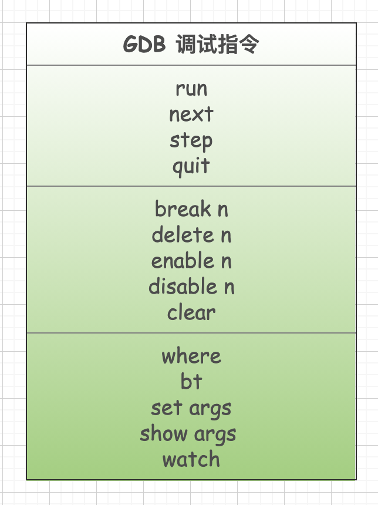
另外，这里没有列举所有的指令，列出的指令都是常用的，比较容易理解。
每一个调试指令都有很多的命令选项，例如断点相关的就包括：设置断点、删除断点、条件断点、临时停用启用等等。这篇文章的重点是理解 gdb 底层的调试机制，所以应用层的这些指令的使用方法就不再列出了，可以阅读手册。
GDB与被调试程序之间的关系
1 | #include <stdio.h> |
``
编译命令:
$ gcc -g test.c -o test
我们对可执行程序 test 进行调试，输入命令：
$ gdb ./test
输出如下：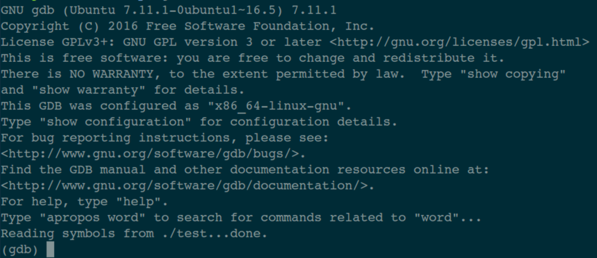
在最后一行可以看到光标在闪烁，这是 gdb 程序在等着我们给它下达调试命令呢。
当上面这个黑乎乎的终端窗口在执行 gdb ./test 的时候，在操作系统里发生了很多复杂的事情：
系统首先会启动 gdb 进程，这个进程会调用系统函数 fork() 来创建一个子进程，这个子进程做两件事情：
- 调用系统函数
ptrace(PTRACE_TRACEME，[其他参数])； - 通过 execc 来加载、执行可执行程序 test，那么 test 程序就在这个子进程中开始执行了。

补充一点：文中有时称之程序，有时称之进程。“程序”描述的是一个静态的概念，就是一堆数据躺着硬盘上，而“进程”描述的是动态的过程，是这个程序被读取、加载到内存上之后，在操作系统中有一个任务控制块(一个数据结构)，专门用来管理这个进程的。
铺垫了半天，终于轮到主角登场了，那就是系统调用函数 ptrace（其中的参数后面会解释），正是在它的帮助下，gdb 才拥有了强大的调试能力。函数原型是：
1 | #include <sys/ptrace.h> |
我们先来看一下 man 中对这个函数的简介：
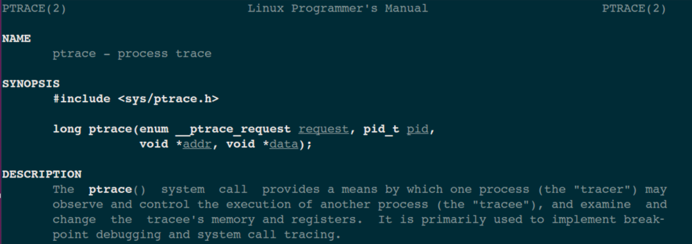
tracer 就是调试程序，可以理解为 gdb 程序；tracee 就是被调试程序，对应于图中的目标程序 test。一般喜欢用-er 和-ee 来表示主动和被动的关系。
ptrace 系统函数是 Linux 内核提供的一个用于进程跟踪的系统调用，通过它，一个进程(gdb)可以读写另外一个进程(test)的指令空间、数据空间、堆栈和寄存器的值。而且 gdb 进程接管了 test 进程的所有信号，也就是说系统向 test 进程发送的所有信号，都被 gdb 进程接收到，这样一来，test 进程的执行就被 gdb 控制了，从而达到调试的目的。
也就是说，如果没有 gdb 调试，操作系统与目标进程之间是直接交互的；如果使用 gdb 来调试程序，那么操作系统发送给目标进程的信号就会被 gdb 截获，gdb 根据信号的属性来决定：在继续运行目标程序时是否把当前截获的信号转交给目标程序，如此一来，目标程序就在 gdb 发来的信号指挥下进行相应的动作。
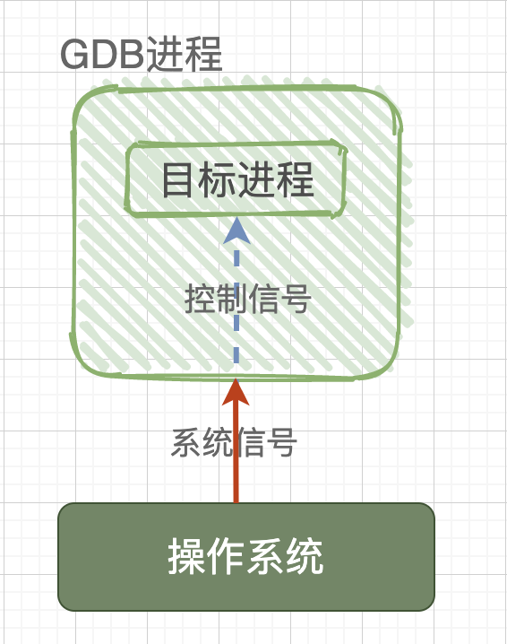
GDB如何调试已经执行的服务进程
是否有小伙伴会提出这样一个疑问：上面被调试的程序 test 是从头开始执行的，是否可以用 gdb 来调试一个已经处于执行中的服务进程呢？答曰：可以。这就涉及到 ptrace 系统函数的第一个参数了，这个参数是一个枚举类型的值，其中重要的是 2 个：PTRACE_TRACEME 和 PTRACE_ATTACH。
在上面的讲解中，子进程在调用 ptrace 系统函数时使用的参数是 PTRACE_TRACEME，注意橙色文字：是子进程调用 ptrace，相当于子进程对操作系统说：gdb 进程是我的爸爸，以后你有任何想发给我的信号，请直接发给 gdb 进程吧！
如果想对一个已经执行的进程 B 进行调试，那么就要在 gdb 这个父进程中调用 ptrace(PTRACE_ATTACH,[其他参数])，此时，gdb 进程会 attach(绑定)到已经执行的进程 B，gdb 把进程 B 收养成为自己的子进程，而子进程 B 的行为等同于它进行了一次 PTRACE_TRACEME 操作。此时 gdb 进程会发送 SIGSTO 信号给子进程 B，子进程 B 接收到 SIGSTOP 信号后，就会暂停执行进入 TASK_STOPED 状态，表示自己准备好被调试了。
所以，不论是调试一个新程序，还是调试一个已经处于执行中状态的服务程序，通过 ptrace 系统调用，最终的结果都是：gdb 程序是父进程，被调试程序是子进程，子进程的所有信号都被父进程 gdb 来接管，并且父进程 gdb 可查看、修改子进程的内部信息，包括：堆栈、寄存器等。
关于绑定，有几个限制需要了解一下：不予许自我绑定，不允许多次绑定到同一个进程，不允许绑定 1 号进程。
偷窥GDB如何实现断点指令
大道理已经讲完了，这里我们通过设置断点(break)这个调试指令，来偷窥一下 gdb 内部的调试机制。还是以上面的代码为例子，这里再重新贴一下代码：
1 | #include <stdio.h> |
来看一下编译出来的反汇编代码是什么样的，编译指令：
gcc -S test.c; cat test.S)
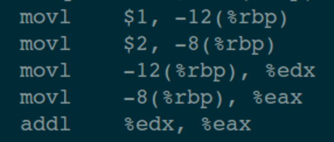
这里只贴了一部分反汇编代码，只要能说明底层的原理就达到我们的目的了。
上面说到，在执行 gdb ./test 之后，gdb 就会 fork 出一个子进程，这个子进程首先调用 ptrace 然后执 test 程序，这样就准备好调试环境了。
我们把源码和汇编代码放在一起，方便理解：
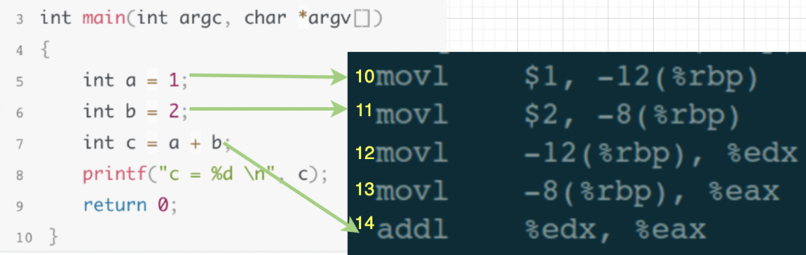
在调试窗口输入设置断点指令“break 5”，此时 gdb 做 2 件事情：
- 对第 5 行源码所对应的第 10 行汇编代码存储到断点链表中。
- 在汇编代码的第 10 行，插入中断指令 INT3，也就是说：汇编代码中的第 10 行被替换为 INT3。
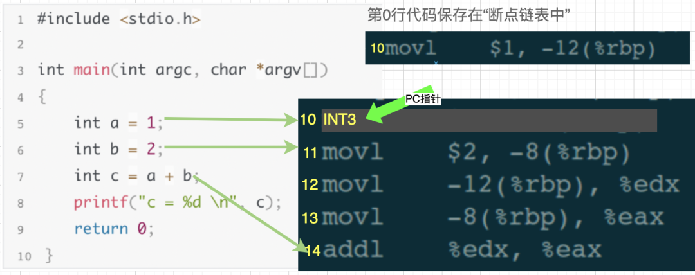
然后，在调试窗口继续输入执行指令“run”(一直执行，直到遇到断点就暂停)，汇编代码中 PC 指针(一个内部指针，指向即将执行的那行代码)执行第 10 行时，发现是 INT3 指令，于是操作系统就发送一个 SIGTRAP 信号给 test 进程。
此刻，第 10 行汇编代码被执行过了，PC 指针就指向第 11 行了。
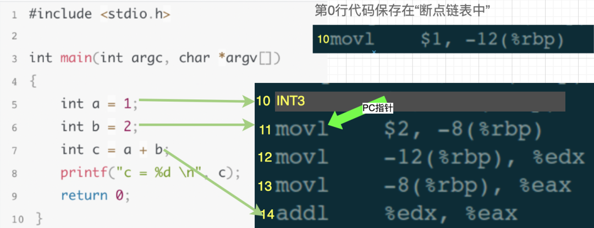
上面已经说过，操作系统发给 test 的任何信号，都被 gdb 接管了，也就是说 gdb 会首先接收到这 SIGTRAP 个信号，gdb 发现当前汇编代码执行的是第 10 行，于是到断点链表中查找，发现链表中存储了第 10 行的代码，说明第 10 行被设置了断点。于是 gdb 又做了 2 个操作：
- 把汇编代码中的第 10 行”INT3”替换为断点链表中原来的代码。
- 把 PC 指针回退一步，也即是设置为指向第 10 行。
然后，gdb 继续等待用户的调试指令。
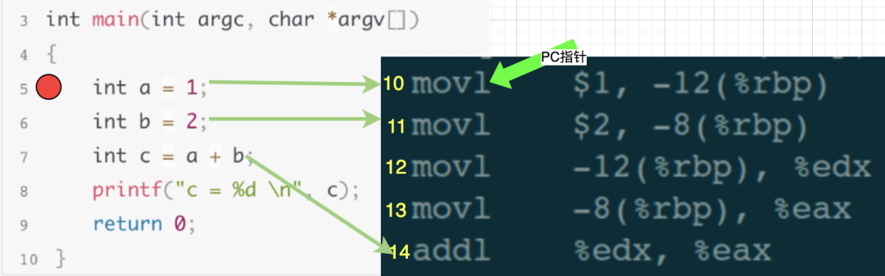
此刻，就相当于下一条执行的指令是汇编代码中的第 10 行，也就是源码中的第 5 行。从我们调试者角度看，就是被调试程序在第 5 行断点处暂停了下来，此时我们可以继续输入其他调试指令来 Debug，比如：查看变量值、查看堆栈信息、修改局部变量的值等等。
偷窥GDB如何实现单步指令 next
还是以刚才的源代码和汇编代码为例，假设此时程序停止在源码的第 6 行，即汇编代码的第 11 行：
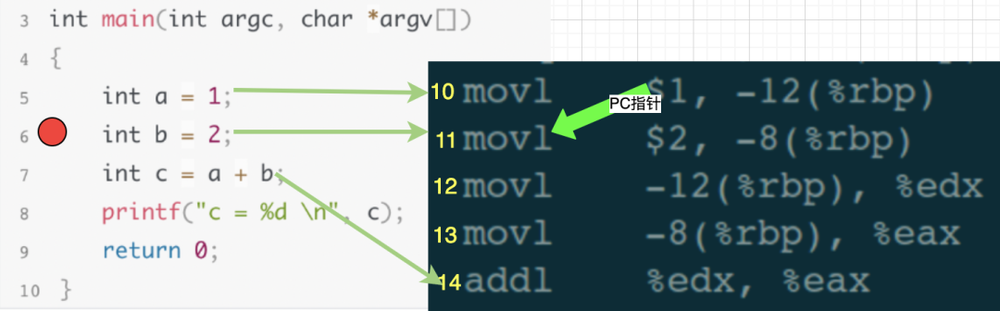
在调试窗口输入单步执行指令 next，我们的目的是执行一行代码，也就是把源码中第 6 行代码执行完，然后停止在第 7 行。gdb 在接收到 next 执行时，会计算出第 7 行源码，应该对应到汇编代码的第 14 行，于是 gdb 就控制汇编代码中的 PC 指针一直执行，直到第 13 行执行结束，也就是 PC 指向第 14 行时，就停止下来，然后继续等待用户输入调试指令。
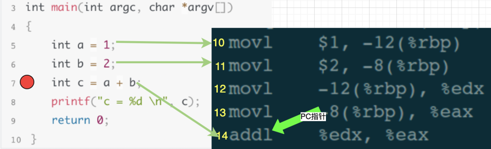
总结
通过 break 和 next 这 2 个调试指令，我们已经明白了 gdb 中是如何处理调试指令。当然，gdb 中的调试指令还有很多，包括更复杂的获取堆栈信息、修改变量的值等等，有兴趣的小伙伴可以继续深入跟踪。